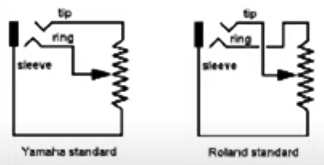
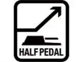

. Так что никаких функций типа полупедали там нет. Из под ноги она пытается постоянно уехать, особенно на скользком полу.
. Так что никаких функций типа полупедали там нет. Из под ноги она пытается постоянно уехать, особенно на скользком полу.Согласно официальной документации, для синтезатора Yamaha PSR E473 подходят следующие педали:
* Педальный переключатель: FC4A / FC5
Yamaha PSR E473 - это синтезатор начального уровня, и поэтому в нем не предусмотрено подключения педалей с полунажатием. Он понимает только простые педали Вкл/Выкл.
* * *
Аббревиатура FC, видимо, обозначает Foot Control.
Джек с тремя контактами (т. е. "стерео") имеют педали:

Педали с чуствительностью нажатия могут иметь переключатель полярности, по сути - это переключение между стандартами Yamaha и Roland.
Джек с двумя контактами (т. е. "моно") имеют педали, работающие как Вкл/Выкл . Однако, похоже что даже на официальных сайтах производители путаются в показаниях, и для двухконтактных педалей пишут что педаль чуствительна к силе нажатия, хотя на деле это не так.
Педали без чуствительности нажатия, работающие в режиме Вкл/Выкл, имеют два исполнения: нормально-замкнутые и нормально-разомкнутые. В одном случае педаль в ненажатом (нормальном) состоянии замыкает контакт, в другом случае - контакт разомкнут. При нажатии, наоборот, контакт размыкается, либо наоборот, замыкается. Эти педали могут быть универсальными и иметь переключатель:
N.O - N. C.
Данный переключатель имеет следующие позиции:
* * *
Согласно обрывочным данным, существуют следующие типы педалей.
Damper - используется в электропианино Roland FP-2, разъем Damper. Подключается педаль рояльного типа, чуствительная к силе нажатия. Джек - трехконтактный, "стерео". Звук струн начинает резонировать с соседними, повышается степень реверберации и широты звука. Аналог правой педали пианино.
FC1 - используется в электропианино Roland FP-2, разъем Sustenuto. Подключается педаль рояльного типа, чуствительная к силе нажатия. Джек - трехконтактный, "стерео". Педаль удерживает ноты, которые уже звучали в момент нажатия педали.
FC2 - используется в электропианино Roland FP-2, разъем Soft. Подключается педаль рояльного типа, чуствительная к силе нажатия. Джек - трехконтактный, "стерео". Немного приглушает звук, аналог левой педали пианино.
FC3 - информации не нашел
FC3A - имеется модель педали Yamaha FC3A. Педаль рояльного типа. Джек - трехконтактный, "стерео". Согласно информации на официальном сайте: поддерживает функцию полупедали, обеспечивая детализированное и экспрессивное исполнение.
|
 |
Поддерживается функция полупедали, чтобы можно было незначительно варьировать величину сустейна, изменяя положение применяемой педали. Это позволяет исполнителю извлекать тонкие нюансы фортепианного тембра, очень близкие к исполняемым на акустическом фортепиано. |
FC4 - имеется модель педали Yamaha FC4. Педаль рояльного типа. Джек - двухконтактный, "моно". На официальном сайте написано: Педаль Sustain, выполненная в фортепиано стиле. Передаёт команды неполного нажатия.
По другой информации: Я разбирал FC4 (у меня их 2) - внутри стоит банальный контакт (причём в одной из них - на замыкание, что очень странно. Так что никаких функций типа полупедали там нет. Из под ноги она пытается постоянно уехать, особенно на скользком полу.
Еще одна информация: Работает FC4 только на вкл и выкл (к сожалению).
... (Буква A, видимо, обозначает полярность (имется полярность A и B)? Нет, похоже что не так) ...
FC4A - имеется модель педали Yamaha FC4A. Педаль рояльного типа. Джек - двухконтактный, "моно". Непонятно, чуствительна к силе нажатия или нет. На официальном сайте про это не сказано, но написано следующее: Обеспечивает примерно то же ощущение при использовании, что и от педали акустического фортепиано. Похоже, что отличается от FC4 наличием функции назначаемых переключателей:
|
|
Поддерживаются функции назначаемых переключателей, позволяющие исполнителю активировать желаемую функцию или установку просто нажатием педали. Возможности исполнения расширяются благодаря всего лишь одной педали. Что это значит - не особенно понятно. То ли педаль может работать в двух режимах - в режиме чуствительном к силе нажатия, и в режиме ON/OFF, то ли только в режиме ON/OFF. Информацию найти сложно. |
Есть или нет на педали модели Yamaha FC4A переключение полярности, на официальном сайте не сказано.
Возможно, что за маркетоидным бредом скрывается простой факт: это педаль, которая работает только на Вкл/Выкл и все.
FC-5 - имеется модель педали Yamaha FC5. Плоская маленькая педаль. Джек - двухконтактный, "моно". Судя по музыкальным форумам, это простая педаль, которая работает как Вкл/Выкл и все, чуствительности к нажатию нет. Судя по отзывам, корпус металлический.